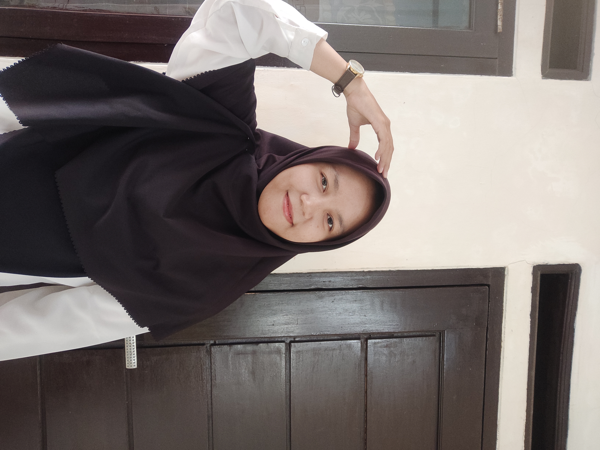

Milda Maulida
Seorang
Aspiring Instructional Designer
Saya menggabungkan pengalaman di bidang pendidikan, desain pembelajaran, dan teknologi untuk menciptakan pengalaman belajar digital yang interaktif dan bermakna.

Mengetahui Siapa Saya
Saya adalah lulusan Sarjana Pendidikan Guru Sekolah Dasar yang tidak berhenti pada mengajar, tetapi juga tertarik pada bagaimana sebuah pengalaman belajar dirancang dan diwujudkan melalui teknologi. Berbekal pengalaman mengajar dan pembelajaran mandiri di bidang web development, saya telah membangun beberapa web pembelajaran sebagai proyek pribadi. Saat ini saya berfokus mengembangkan kemampuan di bidang instructional design dan EdTech, dengan ketertarikan khusus pada digital learning dan teknologi yang dapat membuat pembelajaran lebih interaktif.
Unduh CVApa Yang Saya Buat
Berawal dari rasa penasaran, tumbuh menjadi sebuah karya. Setiap proyek menjadi ruang bagi saya untuk mengeksplorasi ide, mengasah kemampuan, dan mengubah apa yang saya pelajari menjadi sesuatu yang nyata dan bermakna.
Pengalaman & Pelatihan
Setiap pengalaman meninggalkan sebuah cerita. Kumpulan proses, tantangan, dan momen yang membentuk cara saya belajar, berkarya, dan terus berkembang.
MARI BEKERJA SAMA
Mencari peluang berikutnya yang layak dikerjakan.
Terbuka untuk magang, beasiswa, dan proyek freelance di bidang EdTech.
Kirim Pesan →